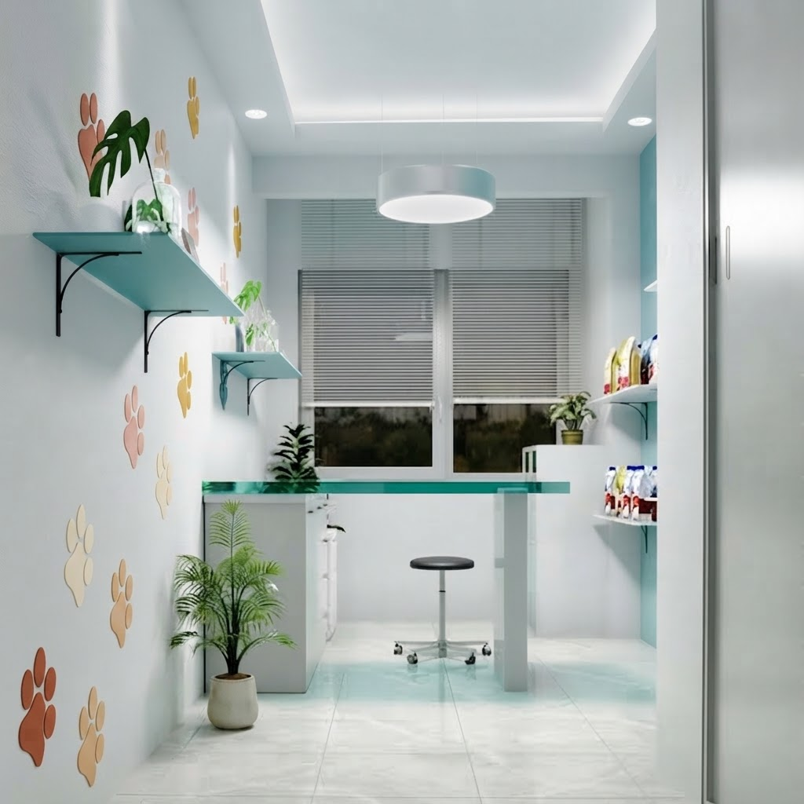

Por qué elegirnos Nuestra historia y compromiso

"Fundada en el corazón de Paraná, Veterinaria La Mary nació del sueño compartido de brindar un espacio donde la salud y el bienestar animal fueran tratados con absoluta dedicación y respeto. Desde nuestros inicios, nos hemos consolidado como un punto de referencia para las familias de la zona, creciendo a la par de nuestra comunidad y adaptándonos tecnológicamente para ofrecer diagnósticos precisos. Cada miembro de nuestro equipo de profesionales comparte una misma vocación: cuidar de tus compañeros de cuatro patas como si fueran propios, acompañándolos en cada etapa de su vida con el profesionalismo y el cariño que se merecen."

"Nuestro consultorio principal está equipado para ofrecer un espacio seguro, limpio y tranquilo donde cada paciente se siente a gusto desde el primer momento. Aquí es donde comienza el camino hacia su recuperación, combinando tecnología de diagnóstico confiable con la calidez humana que nos caracteriza."
-
Urgencias
Cobertura activa las 24 horas, todos los días de la semana.
-
El equipo
Seis profesionales matriculados dedicados al cuidado animal.
-
Diagnóstico ágil
Laboratorio de análisis propio en el mismo local.
-
Todo en un solo lugar
Farmacia, veterinaria y alimentos balanceados.